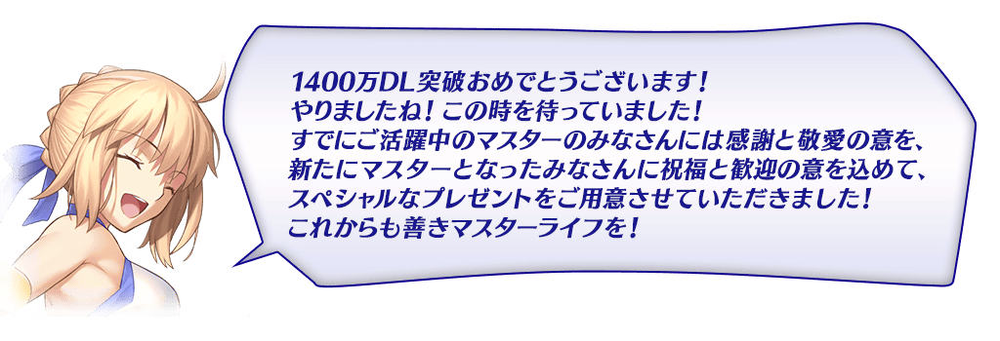
◆舉辦期間◆
2018年8月29日(三) 17:00～9月5日(三) 11:59
今後，在期間限定活動和期間限定宣傳活動中，也預定會有將通過主線關卡設為開放條件的情況。 如果活用本宣傳活動，對推進主線關卡第1部的攻略會有所幫助。
|
為了記念「1400萬DL突破宣傳活動」舉辦，實施特別登入獎勵。 ◆舉辦期間◆ |
 |
◆贈送對象◆
2018年9月5日(三) AM2:59前通過「特異點F 炎上汙染都市 冬木」的Master對象
| 連續登入天數 | 贈送內容 | |
|---|---|---|
| 1日目 | 白銀果實 10個 | |
| 2日目 | 英靈結晶・星之芙芙ALL★3(HP) 10張 | |
| 3日目 | 黃金果實 10個 | |
| 4日目 | 英靈結晶・太陽之芙芙ALL★3(ATK) 10張 | |
| 5日目 | 叡智的猛火 ALL★4(SR) 10張 | |
| 6日目 | 1,000萬QP | |
| 7日目 | 呼符 10張(聖晶石召喚10次份) | |
※第1天的登入獎勵會從8月30日(四) AM4:003:00配發。
※之後的登入獎勵會在每天AM3:00配發。
※連續登入天數中斷的話，無法領取之後的禮物。
※最多能領取7次，但根據成為贈送對象的時間點，可能無法到此上限。
※上述時間前，在管理室(ターミナル)畫面的關卡橫幅必須要有「CLEAR」的文字顯示。
在Master任務(Extra任務)追加可靠「強化關卡」的通過次數達成的新任務。
通過現在實裝的85個強化關卡其中80個的話，最多可得到80個(聖晶石召喚26次份)的聖晶石！
※已通過所有強化關卡的玩家，也能同様領取通過報酬。
◆翻新實施時間◆
2018年8月29日(三) 17:00～
◆通過報酬的領取方式◆
在Master任務畫面顯示的「Extra(エクストラ)」的項目內，會有顯示通過強化關卡的相關任務，點擊已通過的任務領取達成報酬。
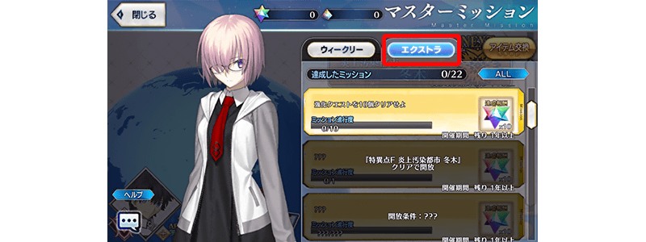
◆追加Extra任務◆
| 任務名稱 | 任務達成報酬 |
|---|---|
| 通過10個強化關卡 | 聖晶石 10個 |
| 通過20個強化關卡 | 聖晶石 10個 |
| 通過30個強化關卡 | 聖晶石 10個 |
| 通過40個強化關卡 | 聖晶石 10個 |
| 通過50個強化關卡 | 聖晶石 10個 |
| 通過60個強化關卡 | 聖晶石 10個 |
| 通過70個強化關卡 | 聖晶石 10個 |
| 通過80個強化關卡 | 聖晶石 10個 |
Servant強化關卡的AP消耗量以期間限定變成1/4！
※請注意幕間物語及曜日關卡為對象外。
※在戰鬥中撤退的情況AP的消耗也是1/4。
◆舉辦期間◆
2018年8月29日(三) 17:00～9月5日(三) 11:59
在迦勒底之門內每日出現的「種火集め」的AP消耗量以期間限定變成1/2！
◆舉辦期間◆
2018年8月29日(三) 17:00～9月5日(三) 11:59
◆對象關卡◆
種火集め<槍・殺編>初級、中級、上級、超級
種火集め<剣・騎編>初級、中級、上級、超級
種火集め<弓・術編>初級、中級、上級、超級
種火集め<ランダム編>初級、中級、上級、超級
【種火集め 關卡的難易度等】
| 難易度 | 推薦Lv | 消耗AP | 初次通過報酬 |
|---|---|---|---|
| 初級 | 5 | 10→5 | 魔力稜鏡 1個 |
| 中級 | 10 | 20→10 | 魔力稜鏡 2個 |
| 上級 | 25 | 30→15 | 魔力稜鏡 3個 |
| 超級 | 40 | 40→20 | 魔力稜鏡 4個 |
※關卡通過報酬的魔力稜鏡只限初次通過時才可獲得。
※關卡通過報酬的魔力稜鏡為每日重置。
◆曜日關卡 種火集め的攻略重點◆
参考攻略推薦職階組成隊伍，挑戰曜日關卡！
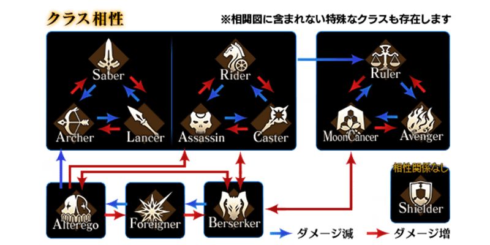
【曜日別種火集め關卡一覧】
| 曜日 | 關卡名 | 做為戰利品可獲得的 主要道具 |
攻略推薦 職階 |
|---|---|---|---|
| 月 | 種火集め <槍・殺編> AP1/2
|
Lancer、Assassin、Berserker的經驗值卡 | 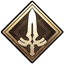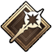 |
| 火 | 種火集め <剣・騎編> AP1/2
|
Saber、Rider、Berserker的經驗值卡 | 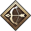 |
| 水 | 種火集め <弓・術編> AP1/2
|
Archer、Caster、Berserker的經驗值卡 | 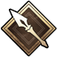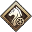 |
| 木 | 種火集め <槍・殺編> AP1/2
|
Lancer、Assassin、Berserker的經驗值卡 | |
| 金 | 種火集め <剣・騎編> AP1/2
|
Saber、Rider、Berserker的經驗值卡 | |
| 土 | 種火集め <弓・術編> AP1/2
|
Archer、Caster、Berserker的經驗值卡 | |
| 日 | 種火集め <ランダム編> AP1/2
|
Saber、Archer、Lancer、Rider、Caster、Assassin、Berserker的經驗值卡(隨機) | - |
※Berserker在所有的曜日關卡皆為為有效職階。

在進行Servant及概念禮裝的強化時，大成功(經驗值2倍加成)・極大成功(經驗值3倍加成)發生機率以期間限定變成2倍！
無論如何藉此機會強化中意的Servant和概念禮裝吧！
◆舉辦期間◆
2018年8月29日(三) 17:00～9月5日(三) 11:59
|
以期間限定在達文西工房的「魔力稜鏡交換」追加下述的道具。 ◆交換期間◆ |
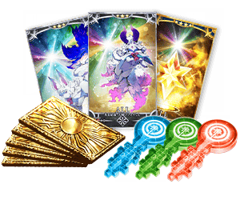 |
| 追加道具 | 能交換 次數 |
1次交換所需的 魔力稜鏡數 |
|---|---|---|
| 【期間限定】Quick・Code・Opaner | 3次 | 100個 |
| 【期間限定】Arts・Code・Opaner | 3次 | 100個 |
| 【期間限定】Buster・Code・Opaner | 3次 | 100個 |
| 【期間限定】呼符 | 5次 | 20個 |
| 【期間限定】叡智的猛火ALL★4(SR)10張組 | 5次 | 40個 |
| 【期間限定】英靈結晶・星之芙芙ALL★3(HP) | 20次 | 15個 |
| 【期間限定】英靈結晶・太陽之芙芙ALL★3(ATK) | 20次 | 15個 |
※在「魔力稜鏡交換」常駐的「Quick・Code・Opaner」「Arts・Code・Opaner」「Buster・Code・Opaner」各交換次數從2018年8月31日(五) 23:00變更至1回。
|
以期間限定在達文西工房的「稀有稜鏡交換」追加下述的道具。 ◆交換期間◆ |
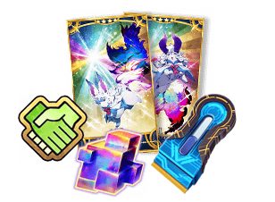 |
| 追加道具 | 能交換 次數 |
1次交換所需的 稀有稜鏡數 |
|---|---|---|
| 【期間限定】Code・Remover | 3次 | 1個 |
| 【期間限定】傳承結晶 | 1次 | 5個 |
| 【期間限定】英靈結晶・流星之芙芙ALL★4(HP) | 1次 | 3個 |
| 【期間限定】英靈結晶・日輪之芙芙ALL★4(ATK) | 1次 | 3個 |
| 【期間限定】友情點數 20,000pt | 5次 | 1個 |
在強化Servant及概念禮裝時所需的QP消耗量，以期間限定變成1/2！
配合大成功＆極大成功發生率2倍，千萬別錯過這超值機會！
◆舉辦期間◆
2018年8月29日(三) 17:00～9月5日(三) 11:59
※請注意Servant技能強化、靈基再臨(Servant進化)、指令刻印、Servant寶具強化、聖杯轉臨、靈衣開放為對象外。
靠強化關卡的通過報酬獲得的聖晶石數從1個翻新成2個！
※還有，已通過強化關卡，領取過去份量報酬的情況，可總結獲得自本次變更對應強化關卡通過數的追加份量聖晶石。
◆翻新實施時間◆
2018年8月29日(三) 17:00～
| 對象關卡 | 通過報酬 |
|---|---|
| 強化關卡 | 聖晶石 1個 → 2個 |
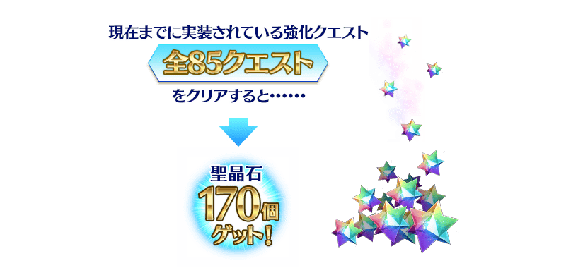
追加可從Servant詳細畫面移動至各Servant的「幕間物語」「Servant強化關卡」的功能。
配合強化關卡AP消耗1/4和強化關卡通過報酬翻新，敬請活用。
◆翻新實施時間◆
2018年8月29日(三) 17:00～
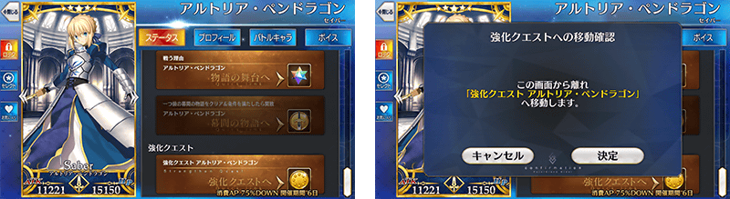
◆「1400萬DL記念Pick Up召喚(每日交替)」期間◆
期間:2018年8月29日(三) 17:00～9月12日(三) 11:59
舉辦期間限定「1400萬DL記念Pick Up召喚(每日交替)」！
為了記念1400萬DL突破，「★5(SSR)阿爾托莉亞・潘德拉剛(Archer)」「★4(SR)瑪莉・安東尼(Caster)」「★4(SR)瑪爾大(Ruler)」以期間限定登場！
本次Pick Up上述3位Servant！
「★4(SR)瑪莉・安東尼(Caster)」「★4(SR)瑪爾大(Ruler)」以每日交替Pick Up，「★5(SSR)阿爾托莉亞・潘德拉剛(Archer)」常駐Pick Up！
※阿爾托莉亞・潘德拉剛(Archer)、瑪莉・安東尼(Caster)、瑪爾大(Ruler)在Pick Up期間結束後不會追加到故事召喚。
※請注意「1400萬DL記念Pick Up召喚(每日交替)」做為每日交替，「★4(SR)瑪莉・安東尼(Caster)」「★4(SR)瑪爾大(Ruler)」就算是Pick Up期間中也有不會被抽出的日子。
詳情請在聖晶石召喚畫面左下的召喚詳細確認。
另外，「夏日！ 海洋！ 開拓！ FGO 2016 Summer Pick Up召喚2」限定概念禮裝「★5(SSR)ナイツ・オブ・マリーンズ」「★4(SR)ミートウォーズ」「★3(R)虚影の塵風かき氷」也以期間限定登場！
※「★3(R)虚影の塵風かき氷」在Pick Up期間中，也能在友情點數召喚獲得。
※請注意自友情點數召喚抽出「★3(R)虚影の塵風かき氷」在自動變還設定登錄★3(R)概念禮裝的情況，會變成自動變還的對象。
Pick Up期間中，期間限定Servant、期間限定概念禮裝的出現機率提升！
10次召喚中確定1張★4(SR)以上和確定1位★3(R)以上的Servant！
※確定★4(SR)以上包含Servant和概念禮裝。
| 每日交替Pick Up期間 | 每日交替Pick Up內容 |
|---|---|
| 8月29日(三) 17:00～ 8月31日(五) 22:59 |
阿爾托莉亞・潘德拉剛(Archer) 瑪莉・安東尼(Caster) 瑪爾大(Ruler) |
| 8月31日(五) 23:00～ 9月2日(日) 22:59 |
阿爾托莉亞・潘德拉剛(Archer) 瑪莉・安東尼(Caster) |
| 9月2日(日) 23:00～ 9月4日(二) 22:59 |
阿爾托莉亞・潘德拉剛(Archer) 瑪爾大(Ruler) |
| 9月4日(二) 23:00～ 9月6日(四) 22:59 |
阿爾托莉亞・潘德拉剛(Archer) 瑪莉・安東尼(Caster) 瑪爾大(Ruler) |
| 9月6日(四) 23:00～ 9月8日(六) 22:59 |
阿爾托莉亞・潘德拉剛(Archer) 瑪莉・安東尼(Caster) |
| 9月8日(六) 23:00～ 9月10日(一) 22:59 |
阿爾托莉亞・潘德拉剛(Archer) 瑪爾大(Ruler) |
| 9月10日(一) 23:00～ 9月12日(三) 11:59 |
阿爾托莉亞・潘德拉剛(Archer) 瑪莉・安東尼(Caster) 瑪爾大(Ruler) |
※請注意會以每日交替變更Pick Up的Servant。
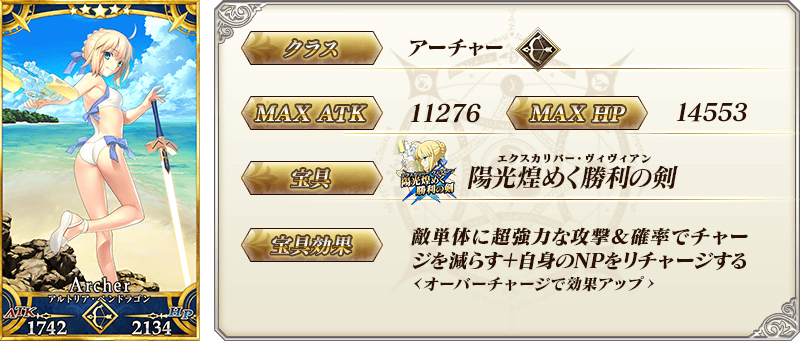


 |
★★★★★SSR |
 |
★★★★SR |
 |
★★★R |

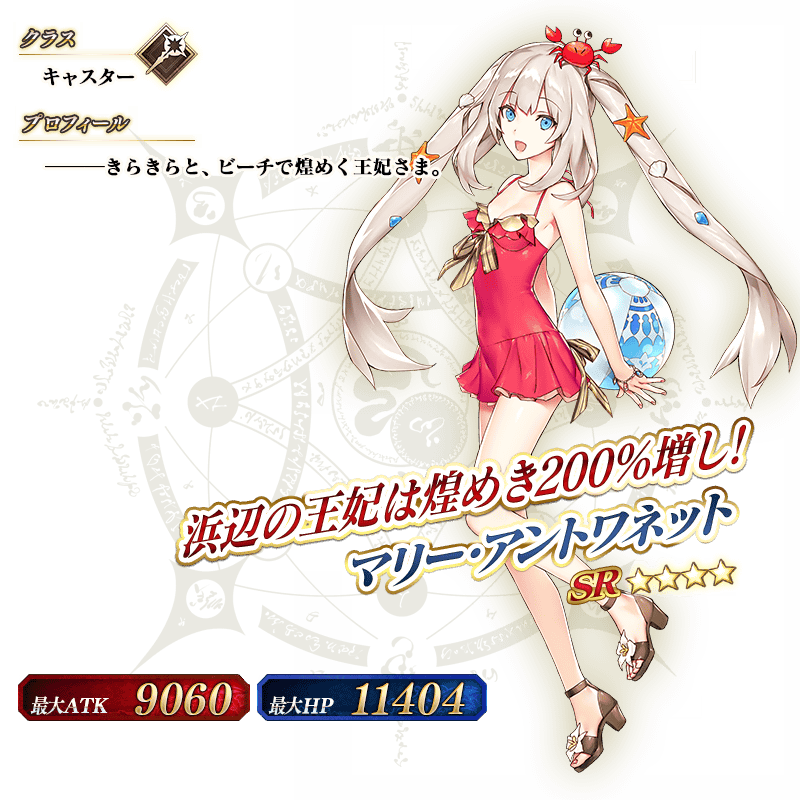

介紹阿爾托莉亞・潘德拉剛(Archer)、瑪莉・安東尼(Caster)、瑪爾大(Ruler)的寶具演出！
在「Fate/Grand Order」官方網站內的公告中，公開了「★5(SSR)阿爾托莉亞・潘德拉剛(Archer)」「★4(SR)瑪莉・安東尼(Caster)」「★4(SR)瑪爾大(Ruler)」的寶具演出。敬請確認。